변리사-1차(3교시) (2015-02-14 기출문제)
1. 동일한 물체 A, B, C가 그림과 같이 줄로 도르래를 통해 연결되어 일정한 속력으로 움직인다. 물체와 수평면 사이의 운동마찰계수는 일정하다. 어느 순간 물체 A와 B사이의 줄이 끊겨, 물체 B와 C만 연결되어 운동한다. 줄이 끊어진 후 물체 C의 가속도 크기는? (단, 줄의 질량, 공기 저항, 도르래의 관성모멘트와 회전 마찰력은 무시한다. 중력가속도는
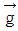
이다.)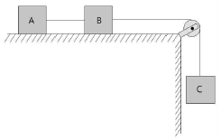
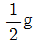
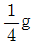
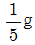
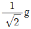
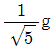
(정답률: 알수없음)
2. 반지름 R = 0.6m이고 관성모멘트 I = 3kg⋅m2인 원통형 도르래에 그림과 같이 줄이 감겨있고, 줄의 끝에 질량 m = 5kg 인 물체가 매달려 있다. 정지해 있던 물체가 자유낙하하여 도르래를 회전시킬 때, 도르래가 10회 회전하는데 걸리는 시간(초)은? (단, 줄은 늘어나지 않고, 줄의 질량 및 굵기, 공기 저항, 도르래의 회전 마찰력은 무시한다. 중력가속도 크기 g는 10 m/s2이다.)
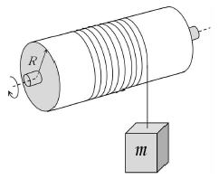
- √2
- √π
- π
- 2√π
- 2π
(정답률: 알수없음)

3. 그림과 같이 반지름이 R인 원형 고리에 막대기로 된 정삼각형이 내접한 모양의 구조물이 있다. 이 구조물이 원형 고리의 중심을 지나는 수직 축에 대하여 각속도
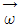
로 회전하고 있을 때 회전축에 대한 각운동량의 크기는? (단, 원형 고리와 막대기의 폭과 두께는 무시할 정도로 얇고, 원형 고리와 막대기의 선질량밀도는 μ로 균질하다.)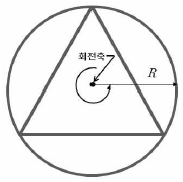
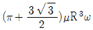
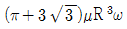
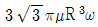
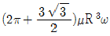
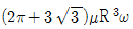
(정답률: 알수없음)
4. 그림과 같이 저항 R이 연결되어 있는 폭 l인 평행한 두 금속 레일 위에 질량이 m인 금속막대가 오른쪽으로 미끄러져 간다. 자기장(
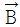
)은 금속막대와 레일이 놓여 있는 지면에 수직하게 들어가는 방향으로 균일하게 지난다. 금속 막대의 속력은 t=0 초에서 3 m/s, t=3 초에서 1 m/s이다. 자기장의 세기 B는? (단, 막대와 레일 사이의 마찰과 접촉 저항은 무시한다.)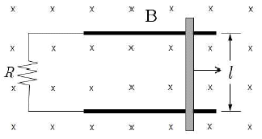
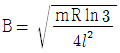
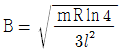
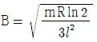
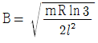
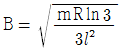
(정답률: 알수없음)
5. 그림과 같이 내부 전극의 반지름이 r1, 외부 전극의 반지름이 r3인 이상적 금속으로 이루어진 동심원 구형 축전기가 있다. 두 전극 사이에 유전율이 ε1인 유전체 A와 유전율이 ε2인 유전체 B가 각각 채워져 있다. 이 축전기의 전기용량 C는?
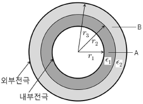
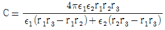
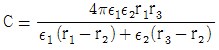
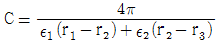
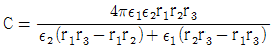
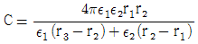
(정답률: 알수없음)
6. 같은 저항값 R을 갖는 두 저항기를 병렬로 연결한 회로 양단에 내부 저항이 0.⑤Ω이고 전압이 15 V인 전지를 연결하면 저항기 1개에 흐르는 전류가 Ip이다. 또한, 이들 저항기를 직렬로 연결한 회로 양단에 같은 전지를 연결하면 저항기 1개에 흐르는 전류가 Is이다.
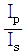
일 때 R값은?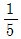
Ω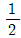
Ω- 1Ω
- 2Ω
- 5Ω
(정답률: 알수없음)
7. 늘어나지 않는 길이가 L인 줄의 양끝이 고정되어 있다. 줄의 장력이 T1일 때의 제2조화 진동수는 장력을 T2로 하였을 때 제1조화 진동수와 같다면, 장력 T1과 T2관계식은?
- T2 = T1 / 4
- T2 = T1 / 2
- T2 = T1
- T2 = 2T1
- T2 = 4T1
(정답률: 알수없음)
8. 1몰 단원자 이상기체 상태가 압력-부피(P-V) 그림의 a에서 b까지 직선 경로를 따라 변할 때, 기체의 엔트로피(entropy) 변화량은? (단, 이상기체 상수는 R이다.)
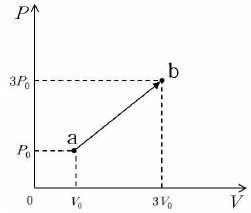
- 3R⋅ln3
- 4R⋅ln2
- 4R⋅ln3
- 4R⋅ln4
- 4R⋅ln5
(정답률: 알수없음)
9. 폭이 L인 일차원 무한 퍼텐셜우물 내에 있는 질량 m인 입자가 갖는 바닥 상태 에너지(ground-state energy)는 E1이다. 우물의 폭과 입자의 질량이 각각 2배로 증가한다면 이 입자가 갖는 바닥 상태의 에너지는? (단, 입자는 비상 대론적으로 취급하며, 우물 내의 퍼텐셜 에너지는 0이다.)
- E1 / 16
- E1 / 8
- E1 / 4
- E1 / 2
- E1
(정답률: 알수없음)
10. 비상대론적으로 움직이는 질량 mA, 속력 vA인 입자 A와 질량 mB, 속력 vB인 입자 B가 있다. A, B입자의 드브로이(de Broglie) 파장을 각각 λA, λB 라 하고, 질량의 비
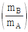
는 km으로, 속력의 비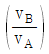
는 kv 하면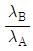
의 관계식은?- kmkv2
- kmkv
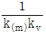
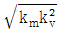
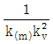
(정답률: 알수없음)
11. 그림은 분자식이 C3H6인 단량체가 반응하여 생성된 고분자의 구조 일부를 나타낸 것이다.
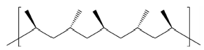
이 고분자에 관한 설명으로 옳은 것만을 보기에서 있는 대로 고른 것은?
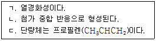
- ㄱ
- ㄷ
- ㄱ, ㄴ
- ㄴ, ㄷ
- ㄱ, ㄴ, ㄷ
(정답률: 알수없음)
12. 다음은 3가지 유기산의 구조이다. 이 유기산의 산성도 세기를 비교한 것으로 옳은 것은?(문제오류로 그림파일이 없습니다. 정답은 4번입니다.)
- (가) ＞ (나) ＞ (다)
- (가) ＞ (다) ＞ (나)
- (나) ＞ (가) ＞ (다)
- (나) ＞ (다) ＞ (가)
- (다) ＞ (가) ＞ (나)
(정답률: 알수없음)
13. 다음의 25℃ 수용액 중에서 이온화 백분율(%)이 가장 작은 것은? (단, 25℃ 수용액에서 CH3COOH과 HCOOH의 산 이온화 상수(Ka)는 각각 1.8 × 10-5, 1.7 × 10-4 이다.)
- 0.01 M HCl
- 0.01 M HCOOH
- 0.01 M CH3COOH
- 0.10 M HCOOH
- 0.10 M CH3COOH
(정답률: 알수없음)
14. 그림은 주기율표의 일부를 나타낸 것이다.
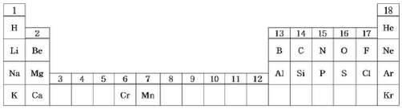
이에 관한 설명으로 옳은 것은?
- 전기음성도는 C가 O 보다 크다.
- 이온 반지름은 Na+이 F-보다 크다.
- 제1차 이온화 에너지는 O가 N 보다 크다.
- 최외각 전자가 느끼는 유효 핵전하는 Al이 Cl보다 크다.
- 바닥 상태 원자에서 홀전자의 수는 Cr이 Mn보다 크다.
(정답률: 알수없음)
15. 그림은 어떤 온도에서 벤젠의 몰분율(X벤젠)에 따른 용액의 증기 압력을 나타낸 것이다. (가)는 톨루엔의 증기 압력을, (나)는 벤젠과 톨루엔의 혼합 용액의 전체 증기 압력(P벤젠 + P톨루엔)을 나타낸 것이다. 벤젠과 톨루엔의 혼합 용액은 이상 용액이다.
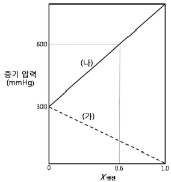
벤젠의 몰분율(X벤젠)이 0.6인 혼합 용액에서 벤젠의 부분 증기 압력(mmHg)은?
- 180
- 300
- 360
- 480
- 540
(정답률: 알수없음)
16. 자료는 Cl2와 H2S가 반응하여 S과 HCl가 형성될 때 제안된 반응 메카니즘과 전체 반응의 반응 속도 법칙(v)이다. 그림은 반응 진행에 따른 에너지를 나타낸 것이며, Ea1, Ea2, Ea3는 각각 단계 Ⅰ, Ⅱ, Ⅲ의 활성화 에너지이다.
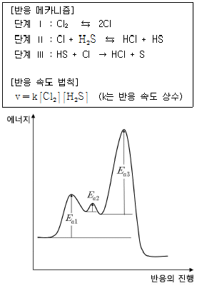
전체 반응에 관한 설명으로 옳은 것만을 보기에서 있는 대로 고른 것은?
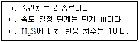
- ㄱ
- ㄷ
- ㄱ, ㄴ
- ㄴ, ㄷ
- ㄱ, ㄴ, ㄷ
(정답률: 알수없음)
17. 그림은 C, H, O로 구성된 어떤 화합물(분자량 = 88 g/mol)의 1H-NMR 스펙트럼을 나타낸 것이다. 스펙트럼 봉우리의 면적비는 A : B : C = 2 : 3 : 3 이다.
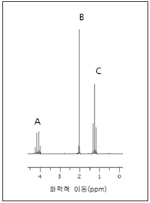
이에 관한 설명으로 옳은 것만을 보기에서 있는 대로 고른 것은?
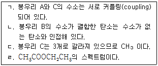
- ㄱ
- ㄱ, ㄴ
- ㄴ, ㄷ
- ㄱ, ㄴ, ㄹ
- ㄴ, ㄷ, ㄹ
(정답률: 알수없음)
18. 그림은
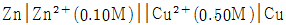
전지를 나타낸 것이고, 자료는 이 전지와 관련된 반응의 표준 환원 전위(Eo)이다.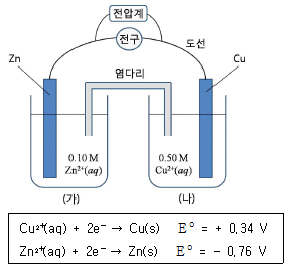
이에 관한 설명으로 옳은 것은? (단, Cu와 Zn의 원자량은 각각 64와 65이다.)
- 이 전지의 초기 전압은 1.10 V보다 작다.
- (가)의 Zn 전극의 전자는 염다리를 통하여 이동한다.
- (나)의 용액에 0.50 M EDTA를 소량 첨가하면 전지 전압이 감소한다.
- 전지를 사용하면 (나)의 용액 색은 파랑색이 진해진다.
- 전지를 사용하면 두 금속 전극의 질량의 합은 증가한다.
(정답률: 알수없음)
19. 다음은 백금 배위 화합물의 합성 과정이다.
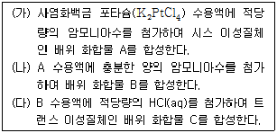
이에 관한 설명으로 옳은 것만을 보기에서 있는 대로 고른 것은?
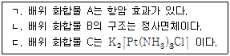
- ㄱ
- ㄴ
- ㄱ, ㄷ
- ㄴ, ㄷ
- ㄱ, ㄴ, ㄷ
(정답률: 알수없음)
20. 다음은 어떤 평형 반응식과 아레니우스(Arrhenius) 식이다.
그림은 아레니우스 식을 이용하여 절대 온도(T)에 따른 kf와 kr를 나타낸 것이다.
이에 관한 설명으로 옳지 않은 것은?
- T1에서 평형 상수는 1보다 작다.
- 평형 상수는 T1에서가 T2에서보다 크다.
- 활성화 에너지는 정반응이 역반응보다 크다.
- 1/T(x축)에 따른 lnkf(y축)을 도시하였을 때 직선의 기울기값은 -Ea정반응/R 이다.
- 정반응의 표준 깁스 자유 에너지 변화(△Go)는 T2에서가 T1에서보다 크다.
(정답률: 알수없음)
21. 세포에서 일어나는 삼투현상에 관한 설명으로 옳은 것만을 보기에서 있는 대로 고른 것은?
- ㄱ, ㄷ
- ㄱ, ㄹ
- ㄴ, ㄹ
- ㄱ, ㄴ, ㄷ
- ㄴ, ㄷ, ㄹ
(정답률: 알수없음)
22. 진핵세포의 세포호흡에 관한 설명으로 옳지 않은 것은?
- 최종 전자수용체는 O2이다.
- O2 공급이 중단되면 ATP 생산이 감소한다.
- 시트르산의 농도가 높아지면 해당작용이 억제된다.
- 해당과정에서 나온 ATP는 산화적 인산화에 의해서 생성된 것이다.
- 포도당에 들어있는 에너지의 일부는 ATP에 저장되고, 나머지는 열로 발산된다.
(정답률: 알수없음)
23. 호르몬 수용체(receptor)에 관한 설명으로 옳지 않은 것은?
- 단백질 분자이다.
- 호르몬과 결합하면 세포 내에서 특정 화학 반응이 유도된다.
- 어떤 호르몬 수용체는 세포질에 존재한다.
- 호르몬의 크기와 형태를 인식하여 결합한다.
- 세포막에서 호르몬을 세포 안으로 수송한다.
(정답률: 알수없음)
24. 다음은 갑상선 호르몬의 분비 조절 과정을 나타낸 것이다.
이에 관한 설명으로 옳은 것만을 보기에서 있는 대로 고른 것은?
- ㄱ, ㄷ
- ㄱ, ㄹ
- ㄴ, ㄷ
- ㄴ, ㄹ
- ㄷ, ㄹ
(정답률: 알수없음)
25. 무거운 질소(15N)로 표지된 이중나선 DNA 1분자(15N-15N)를 보통질소(14N)조건에서 5회 연속 복제를 시켰다. 복제된 32분자의 DNA 중 15N-14N 인 DNA 분자 수는?
- 2
- 4
- 8
- 16
- 32
(정답률: 알수없음)
26. 유전자(gene)에 관한 설명으로 옳은 것만을 보기에서 있는 대로 고른 것은?
- ㄱ
- ㄴ
- ㄱ, ㄴ
- ㄴ, ㄷ
- ㄱ, ㄴ, ㄷ
(정답률: 알수없음)
27. 초파리에서 다리가 될 운명의 세포군에 ey(eyeless) 유전자를 배아단계부터 인위적으로 발현시켰더니 성체의 다리에 눈 구조가 만들어졌다. 이에 관한 설명으로 옳은 것만을 보기에서 있는 대로 고른 것은?
- ㄱ
- ㄷ
- ㄱ, ㄷ
- ㄴ, ㄷ
- ㄱ, ㄴ, ㄷ
(정답률: 알수없음)
28. 왓슨과 크릭이 DNA 이중나선 구조 모델에서 제안한 DNA의 특징을 보기에서 있는 대로 고른 것은?
- ㄱ, ㄷ
- ㄱ, ㄹ
- ㄴ, ㄹ
- ㄱ, ㄴ, ㄷ
- ㄴ, ㄷ, ㄹ
(정답률: 알수없음)
29. 다음은 환경적응의 예이다.
위의 환경적응 원리와 다른 것은?
- 곰은 겨울잠을 잔다.
- 사철 푸른 상록수는 겨울에 잎의 삼투압을 증가시킨다.
- 보리는 가을에 씨를 뿌려야 이듬해 봄에 수확할 수 있다.
- 붓꽃은 늦은 봄에 꽃이 피고, 국화는 가을에 꽃이 핀다.
- 추운 지방에 사는 포유류는 몸집에 비해 상대적으로 말단부위가 작다.
(정답률: 알수없음)
30. 그림은 동물 계통수의 일부이다.
이에 관한 설명으로 옳은 것만을 보기에서 있는 대로 고른 것은?
- ㄱ
- ㄷ
- ㄱ, ㄴ
- ㄴ, ㄷ
- ㄱ, ㄴ, ㄷ
(정답률: 알수없음)
31. 해양판과 대륙판이 만나는 수렴경계에 관한 설명으로 옳지 않은 것은?
- 천발지진은 발생하지 않는다.
- 해구가 생성된다.
- 맨틀의 부분용융에 의해 화산활동이 일어난다.
- 나츠카판과 남미판의 관계가 그 예에 해당한다.
- 화산호(volcanic arc)가 발달한다.
(정답률: 알수없음)
32. 신생대에 일어난 지질학적 사건으로 옳은 것만을 보기에서 있는 대로 고른 것은?
- ㄱ, ㄴ
- ㄴ, ㄷ
- ㄷ, ㄹ
- ㄷ, ㅁ
- ㄹ, ㅁ
(정답률: 알수없음)
33. 강원도 지역에 대규모로 분포하는 석회암층에 관한 설명으로 옳은 것만을 보기에서 있는 대로 고른 것은?
- ㄱ
- ㄴ
- ㄱ, ㄴ
- ㄴ, ㄷ
- ㄱ, ㄴ, ㄷ
(정답률: 알수없음)
34. 지구 내부의 구조 및 구성 물질에 관한 설명으로 옳지 않은 것은?
- 대륙지각은 해양지각보다 젊다.
- 맨틀은 초염기성암으로 구성되어 있다.
- 내핵은 높은 온도에도 불구하고 높은 압력 때문에 고체 상태로 존재한다.
- 상부맨틀에는 지진파의 속도가 느려지는 저속도층(low velocity layer)이 존재한다.
- 암석권(lithosphere)은 지각과 상부맨틀의 최상부층으로 딱딱한 부분이다.
(정답률: 알수없음)
35. 다음은 화성암 분류 모델을 간단히 나타낸 것이다.
이에 관한 설명으로 옳은 것은?
- 분출암은 관입암보다 천천히 냉각되었다.
- 염기성마그마는 산성마그마보다 점성이 높다.
- 염기성마그마는 산성마그마보다 온도가 높다.
- 염기성암에서 산성암으로 갈수록 SiO2, Na2O 및 CaO 함량은 증가한다.
- 염기성암에서 산성암으로 갈수록 FeO와 MgO 함량은 증가한다.
(정답률: 알수없음)
36. 기온이 30℃, 이슬점이 20℃인 공기덩어리가 500 m 수직 상승했을 때, 이 공기 덩어리의 기온과 이슬점은? (순서대로 기온(℃), 이슬점(℃))
- 20, 15
- 21, 15
- 22, 19
- 24, 19
- 25, 19
(정답률: 알수없음)
37. 그림은 기권의 수직구조를 나타낸 모식도이다.
(가)와 (나)에 관한 설명으로 옳은 것만을 보기에서 있는 대로 고른 것은?
- ㄱ, ㄴ
- ㄱ, ㄷ
- ㄴ, ㄷ
- ㄴ, ㄹ
- ㄷ, ㄹ
(정답률: 알수없음)
38. 그림 (가)는 오리온자리의 천체 사진이고, (나)는 별 A(베텔게우스)와 별 B(리겔)의 단위 면적에서 단위 시간당 방출되는 파장별 빛의 세기를 나타낸 것이다.
별 A가 별 B보다 큰 값을 갖는 물리량을 보기에서 있는 대로 고른 것은?
- ㄴ
- ㄷ
- ㄱ, ㄴ
- ㄱ, ㄷ
- ㄱ, ㄴ, ㄷ
(정답률: 알수없음)
39. 절대등급이 5등급인 별 10,000개로 이루어진 구상성단이 있다. 이 성단까지의 거리가 100 pc일 때, 이 성단의 겉보기 등급은? (단, 성간물질에 의한 흡수 효과는 무시한다.)
- -1등급
- 0등급
- 1등급
- 5등급
- 10등급
(정답률: 알수없음)
40. 그림 (가)는 황도 12궁과 공전 궤도상 지구의 위치를, (나)는 동짓날 자정의 쌍둥이자리와 달을 나타낸 것이다.
이에 관한 설명으로 옳은 것만을 보기에서 있는 대로 고른 것은?
- ㄱ
- ㄴ
- ㄱ, ㄴ
- ㄴ, ㄷ
- ㄱ, ㄴ, ㄷ
(정답률: 알수없음)
물체가 도르래를 회전시키기 위해서는 중력이 도르래의 회전축 주위를 중심으로 회전운동을 하면서 도르래를 회전시켜야 한다. 이 때, 도르래의 관성모멘트 I와 각속도 ω, 물체의 질량 m, 중력가속도 g가 관련되어 있다. 따라서 물체가 도르래를 회전시키기 위해서는 다음과 같은 관계식을 만족해야 한다.
mgh = 1/2Iω^2
여기서 h는 물체의 높이이고, ω는 각속도이다. 이 식을 변형하면 다음과 같다.
ω = √(2mgh/I)
따라서 물체가 도르래를 회전시키기 위해서는 높이 h와 관성모멘트 I, 물체의 질량 m, 중력가속도 g가 주어져 있으면 각속도 ω를 구할 수 있다.
한 바퀴를 도는 데 걸리는 시간은 주어진 각속도 ω에 대해 다음과 같다.
T = 2π/ω
따라서 도르래가 10회 회전하는 데 걸리는 시간은 다음과 같다.
T = 20π/ω = 20π/√(2mgh/I)
여기서 h = R(1-cosθ)이고, θ는 도르래의 회전각이다. 따라서 θ = 20π/10 = 2π이다. 따라서 h = R(1-cos2π) = 0이다. 따라서 물체가 도르래를 회전시키기 위해 필요한 높이는 0이므로, 위의 식에서 h = 0으로 대입하면 다음과 같다.
T = 20π/√(2I/mg)
여기서 I = 3kg⋅m^2, m = 5kg, g = 10 m/s^2이므로, 다음과 같다.
T = 20π/√(2×3×5×10) = 2√π
따라서 도르래가 10회 회전하는 데 걸리는 시간은 2√π초이다.